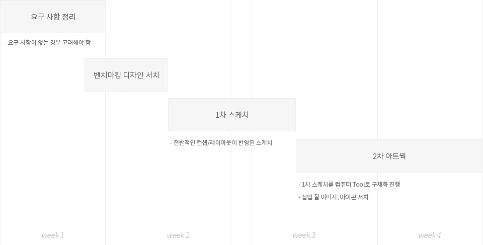
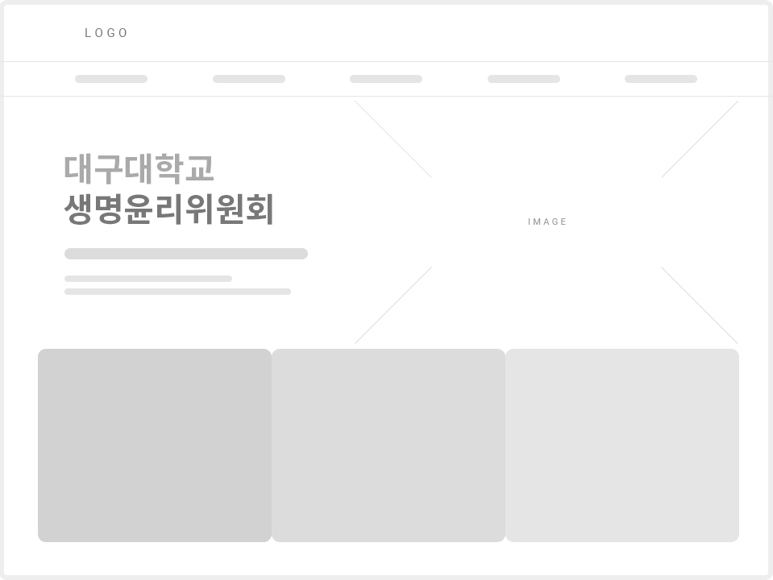

Story
대구대학교 생명윤리위원회
경북 경산에 위치한 대구대학교 생명윤리위원회(?)는 대부분의 심의 관련 업무를 오프라인으로 처리 중이었고,
업무의 건수가 점증 됨에 따라 온라인으로 업무 대체가 가능한 ‘심의 프로그램 웹사이트’가 필요했습니다.
본 프로젝트 착수 이후 관련 회의 및 각종 보고회에 참여했으며 담당자와 오프라인(유선, 메일) 소통을 메인으로 담당했습니다.
디자인 및 코딩(html/css) 작업을 메인으로 담당했으며 서브 콘텐츠(인사말, 조직도 등) 작업은 동료 디자이너와 함께 진행했습니다.
담당자의 디자인 요구사항은 해당 대학교의 상징 색상 사용과 기존의 타 사이트와 다른 형식의 레이아웃을 요청했습니다.
Work process

Colors
#007A66
#4BAC29
#EFD002
Font
Noto Sans KR
light - Regular - Bold
대구대학교 생명윤리위원회
대구대학교 생명윤리위원회
대구대학교 생명윤리위원회
Sketch

Final
design issue
본 웹사이트가 제작 된 주 목적은 "심의 신청"을 하고 심사를 받기 위함입니다.
심의 신청이 가능하기 위해서는 두 가지 조건이 충족되어야 함으로 해당 조건에 관한 내용을 중간 위치에 큰 비중을 두었습니다. * 전구모양의 메인 이미지는 이미지투데이 렌탈 사이트에서 다운 받아 사용 됨
심의 신청이 가능하기 위해서는 두 가지 조건이 충족되어야 함으로 해당 조건에 관한 내용을 중간 위치에 큰 비중을 두었습니다. * 전구모양의 메인 이미지는 이미지투데이 렌탈 사이트에서 다운 받아 사용 됨